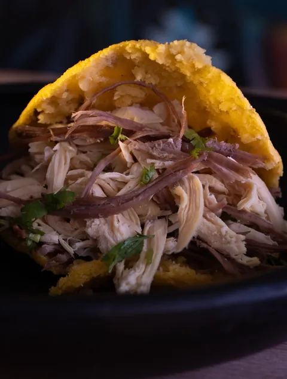

Resplandor Restaurante Almuerzo colombiano y asados, todos los días de 12 a 5
Cocina colombiana, asados y cocina mixta en Poblado del Sur, La Estrella. El mismo salón donde almuerzas se reserva para celebrar, de 10 a 30 personas.
- Almuerzo todos los días, de 12:00 a 5:00 de la tarde.
- Desayunos todos los días · 7:00 a.m. – 11:00 a.m.
- Celebraciones en el local, de 10 a 30 personas.
- Un menú de la semana que la gente vota.

Promociones de la semana
Cada día trae una promoción diferente. Desliza para ver toda la semana; la de hoy está marcada.
![Afiche con las promociones de la semana de Resplandor. Nuevo horario: desayunos de lunes a domingo, de 7:00 a.m. a 11:00 a.m. Promoción diferente todos los días: lunes, 3er almuerzo con 20% de descuento (20% OFF); martes, combo de hamburguesas por 50.000 pesos; miércoles, cócteles, jugos y sodas 2 x 1; jueves, dupleta de papas por 39.000 pesos; viernes, picada más jarra de Cantarito por 160.000 pesos; sábado, entradas de la carta 2 x 1; domingo, almuerzos por 20.000 pesos. Domicilios en todo el sur.](assets/img/promos/promo-semana-960.webp)


Menú de hoy
Un plato del día, con opciones que la gente vota para armar el resto de la semana.
No pudimos cargar el menú de hoy.
No pudimos cargar el menú de hoy en este momento. Puedes ver la semana completa en menu.html.
Hoy no hay un plato fijo de la semana.
El restaurante abre igual, de 12:00 a 5:00 de la tarde — mira la carta o vuelve entre semana por el menú del día.
Esta semana

Lo que sale de la cocina
Platos que hemos servido, fotografiados sobre tela negra con el mural detrás. Lo que hay hoy, con su precio, está en la carta.



Lo que hay hoy, con su precio, está en la carta.
Desliza para ver más.
Ver la cartaLa carta
Precios en pesos colombianos. Se lee en vivo: lo que ves acá es lo que hay hoy.
No pudimos cargar la carta en vivo.
No pudimos cargar la carta en este momento. Puedes ver la carta completa en carta.html.


Almuerzo programado
Para quienes almuerzan seguido: eliges la frecuencia — única vez, toda la semana, cada quince días o todos los días — y nosotros lo tenemos listo.
- Lo recoges en el restaurante, sin costo adicional.
- O te lo llevamos a domicilio: el costo del domicilio corre por tu cuenta.
- 1Eliges la frecuencia y cuántas personas.
- 2Decides si lo recoges o si va a domicilio.
- 3Confirmamos todo por WhatsApp, contigo.
Tu celebración, en este mismo salón
Cumpleaños, quinces, aniversarios, reuniones de trabajo: aquí, de 10 a 30 personas, con decoración de globos y un menú acordado. Todo evento es en el local; se cotiza por WhatsApp.

-
Cumpleaños infantil
Decoración de globos y un menú pensado para los más chiquitos.
-
Cena romántica
Una mesa aparte para celebrar en pareja, con el ambiente cuidado.
-
Fiesta / quinceañera
Decoración temática y espacio para tus invitados, de 10 a 30 personas.
-
Plan menú ejecutivo
Menú por persona para reuniones de trabajo o grupos prácticos.
-
Plan barril
El plan de asados al barril, para grupos que quieren compartir en grande.
-
Plan All-Inclusive
El plan más completo: comida, bebida y decoración coordinadas por nosotros.
-
Evento corporativo
Espacio reservado y menú acordado con anticipación para tu empresa.
-
Otra celebración
¿Algo distinto en mente? Cuéntanos y armamos el plan por WhatsApp.
Un restaurante de barrio en La Estrella
Resplandor es el letrero rojo sobre negro de la Cra. 61. Adentro, dos paredes: la terracota con las letras en relieve y la del mural. Mesas de madera para 30 personas: el mismo salón para almorzar a diario y para celebrar.
-
30 personas en el salón
Las celebraciones son de 10 a 30.
-
Todos los días: desayunos 7:00–11:00 y almuerzos 12:00–17:00
- 5,0 en Google Maps · 2 reseñas


Cómo llegar

Cra. 61 #79 Sur-62, Poblado del Sur
La Estrella, Antioquia · Plus code 5954+9J
Desayunos todos los días, 7:00 a.m. – 11:00 a.m.Almuerzos todos los días, 12:00 a 5:00 de la tarde
+57 322 554 2434
Preguntas frecuentes
¿Las celebraciones se pueden hacer fuera del restaurante?
No. Todo evento y toda celebración se organiza en el local, de 10 a 30 personas. La única excepción es el almuerzo programado, que puede salir a domicilio.
¿Cuál es la capacidad del local?
Hasta 30 personas. Es el mismo local donde comes a diario: no tenemos un salón aparte para eventos.
¿Con cuánta anticipación aviso?
Para una celebración recomendamos avisar con al menos 48 horas. Si solo quieres una mesa, sin celebración, escríbenos por WhatsApp el mismo día.
¿El almuerzo programado se puede llevar a domicilio?
Sí. Puedes recogerlo sin costo, o pedirlo a domicilio asumiendo tú el costo del domicilio.
¿Cómo se confirma y se paga?
Todo se conversa y confirma directamente por WhatsApp con el restaurante — sin pagos en línea ni anticipos automáticos por este sitio.